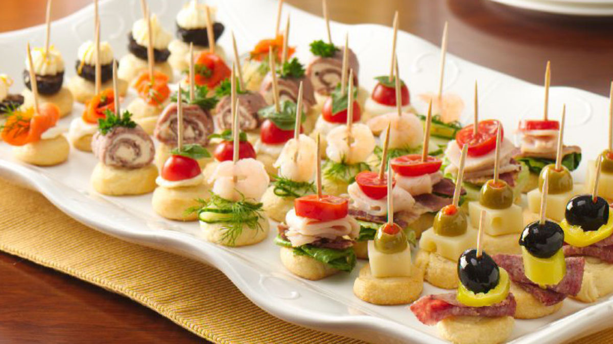
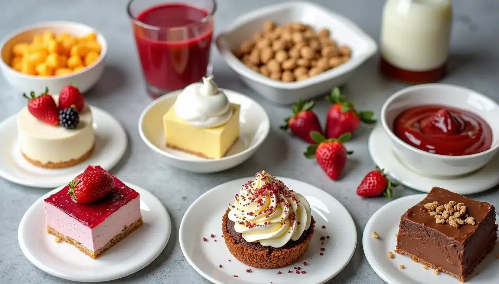

Delicious Bites Menu
Appetizers
Start your culinary adventure with our mouthwatering appetizers, a perfect prelude to an unforgettable meal.

-
Salade Caprese Tomates fraîches, mozzarella et basilic arrosés d'un glaçage balsamique.
-
Bruschetta Pain grillé garni de tomates hachées, ail et basilic frais.
-
Gougères Petits choux au fromage servis chauds.
Main Courses
Indulge in our exquisite main courses, crafted with passion and the finest ingredients to elevate your dining experience.
-
Saumon grillé Filet de saumon assaisonné et grillé à la perfection, servi avec une sauce au beurre citronné.
-
Poulet au citron Blanc de poulet mariné, rôti et servi avec des légumes de saison.
-
Pâtes Primavera Pâtes fraîches avec des légumes de saison et une sauce légère à l'ail.
Desserts
End your meal on a sweet note with our delightful desserts, each bite a blissful treat for your senses.

-
Fondue au chocolat Assortiment de fruits et de guimauves servis avec une riche fondue au chocolat.
-
Tarte Tatin Tarte aux pommes caramélisées servie tiède avec de la crème fraîche.
-
Mousse au chocolat Mousse légère et aérienne au chocolat noir, garnie de crème fouettée.
Contactez-nous pour les réservations